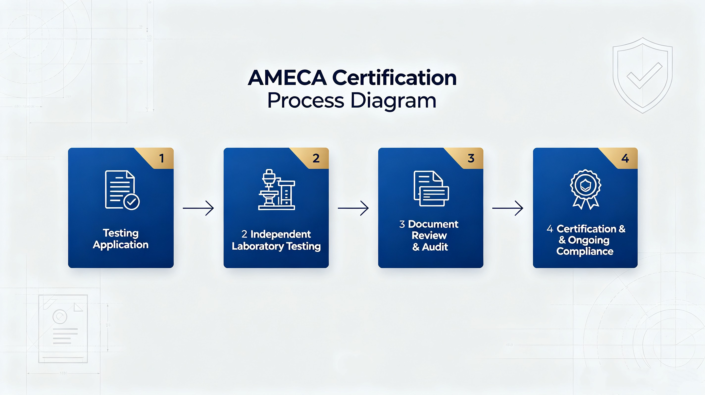
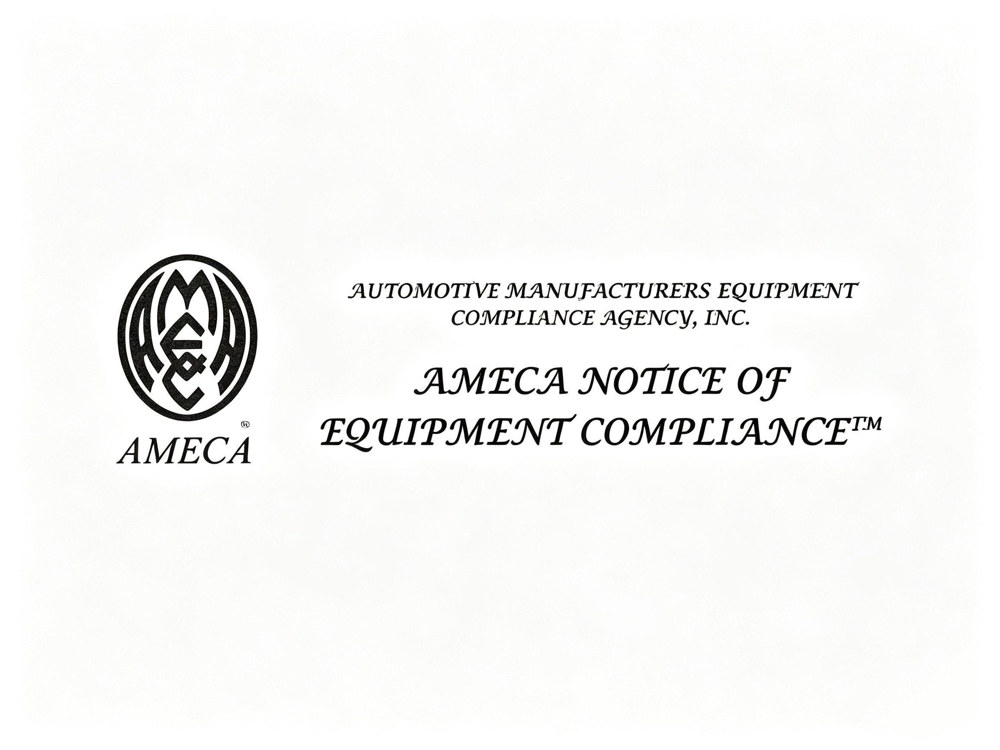
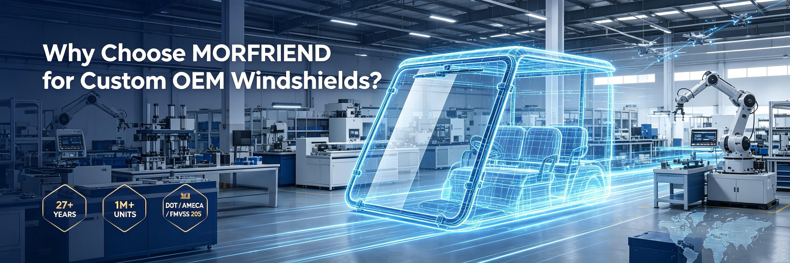

Quick Answer
AMECA certification is an independent third-party verification that demonstrates automotive glazing products comply with applicable U.S. Federal Motor Vehicle Safety Standards (FMVSS). For North American importers, sourcing from manufacturers capable of supporting AMECA-certified production —such as MORFRIEND —helps reduce compliance risks while ensuring consistent product quality.
Why AMECA Certification Matters
When importing golf cart windshields for the North American market, regulatory compliance is one of the most critical considerations. Many importers assume that a supplier's claim of "DOT-compliant" products is sufficient. However, DOT certification relies on a manufacturer self-certification system, meaning there is no mandatory third-party verification before products reach the market.
This is where AMECA certification adds significant value. AMECA provides independent, third-party verification that a manufacturer's glazing products actually meet FMVSS requirements. For distributors, fleet operators, and OEM brands, choosing AMECA-certified products means:
- Verified compliance —products have been independently tested and confirmed to meet FMVSS 205 performance requirements
- Reduced regulatory risk —import documentation is backed by an independent certification body
- Manufacturing consistency —AMECA requires ongoing factory audits, not just one-time product testing
- Market confidence —government procurement, dealership networks, and fleet operators often require AMECA listing
As golf carts continue to be used as low-speed vehicles (LSVs) on public roads, compliance requirements are becoming increasingly strict. For importers, distributors, and OEM brands, working with an experienced manufacturer like MORFRIEND, which supports AMECA-certified windshield production, helps simplify regulatory compliance and improve long-term product reliability.
What Is AMECA Certification?
AMECA (Automotive Manufacturers Equipment Compliance Agency) is an independent, non-governmental organization recognized by the U.S. National Highway Traffic Safety Administration (NHTSA) to evaluate and list automotive safety equipment that complies with applicable FMVSS requirements.
Unlike DOT self-certification —where the manufacturer is responsible for testing and declaring compliance independently —AMECA certification involves a third-party evaluation process that includes:
- Independent laboratory testing to applicable FMVSS standards
- Factory audit to verify manufacturing processes and quality systems
- Ongoing surveillance to ensure continued compliance over time
- Public listing on the AMECA directory, accessible by regulators and buyers worldwide

For golf cart windshields specifically, AMECA certification focuses on compliance with FMVSS 205, the federal standard governing glazing materials. Manufacturers such as MORFRIEND design and manufacture golf cart windshields according to applicable FMVSS 205 requirements and can support customers seeking AMECA-certified products for North American markets.
AMECA vs. DOT: Understanding the Difference
Many buyers confuse these two terms. While both relate to FMVSS compliance, they represent fundamentally different certification approaches.
In practice, responsible manufacturers combine both: achieving DOT compliance through internal testing and quality systems, then reinforcing credibility with AMECA third-party verification.
Why Smart Buyers Request AMECA
For North American importers, distributors, and fleet procurement teams, requesting AMECA-listed products is increasingly becoming standard practice. Here's why:
- Simplified customs clearance —AMECA documentation helps demonstrate product compliance during import inspections
- Government procurement eligibility —many municipal and state-level fleet contracts require AMECA-listed glazing products
- Dealership requirements —major golf cart dealership networks increasingly specify AMECA verification in their supplier agreements
- Liability protection —independent certification provides documentation that products meet recognized safety standards
- End-user confidence —consumers increasingly research certification before purchasing safety-related products

Many purchasing managers include AMECA support as part of their supplier qualification process. Manufacturers with established quality systems, such as MORFRIEND, can provide technical documentation, quality records, and certification support throughout OEM projects.
AMECA certification turns a manufacturer's claim into a verified fact —giving importers and distributors the confidence to build long-term supply partnerships.
Why Leading Importers Choose MORFRIEND
For more than 27 years, MORFRIEND has specialized in manufacturing high-performance acrylic golf cart windshields for OEM brands, distributors, and fleet customers worldwide. Our engineering and production teams understand the certification requirements of North American markets and support customers throughout the compliance process.

MORFRIEND offers:
Certification & Compliance
- Support for AMECA-certified windshield production
- Windshields designed to meet FMVSS 205 performance requirements
- DOT-compliant product marking
- Optical clarity inspection
- Impact resistance testing
- UV weathering evaluation
Manufacturing & Customization
- OEM & ODM manufacturing
- Private logo printing
- Custom dimensions and thicknesses
- Export documentation support
From mold development to mass production, every process is completed in-house, allowing us to maintain consistent quality while meeting the documentation requirements of North American distributors and OEM customers.
Frequently Asked Questions
What does AMECA stand for?
AMECA stands for the Automotive Manufacturers Equipment Compliance Agency, an independent organization recognized by NHTSA to evaluate and list automotive safety equipment that complies with applicable FMVSS requirements.
Is AMECA certification required for golf cart windshields?
AMECA certification is not legally required, but it is increasingly requested by fleet operators, government procurement, and major distributors as independent verification of FMVSS compliance.
How is AMECA different from DOT certification?
DOT certification is manufacturer self-certification, while AMECA involves independent third-party lab testing and factory audits. AMECA verifies compliance rather than relying solely on the manufacturer's declaration.
How can I verify AMECA certification for a supplier?
AMECA-listed products appear in the public AMECA directory. Request the supplier's AMECA listing number and verify it directly through the official AMECA website or documentation.